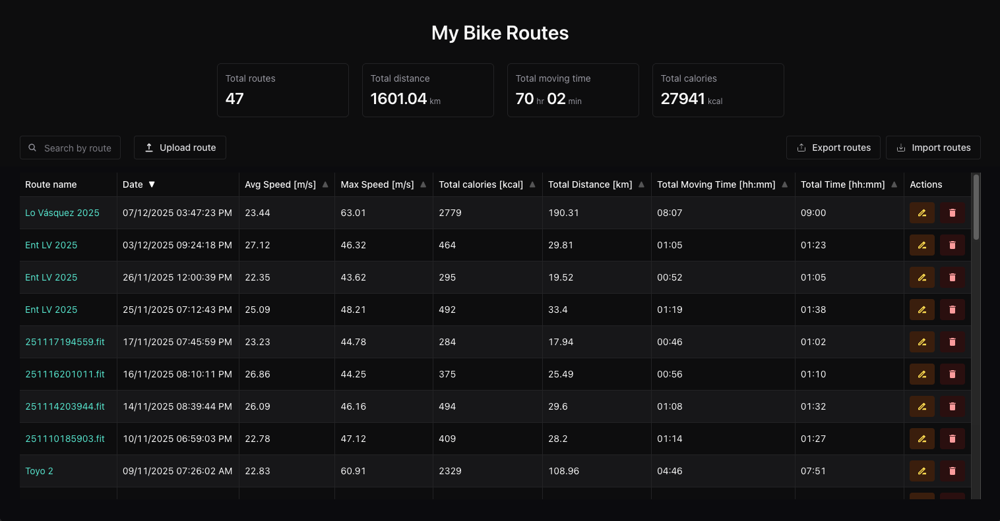
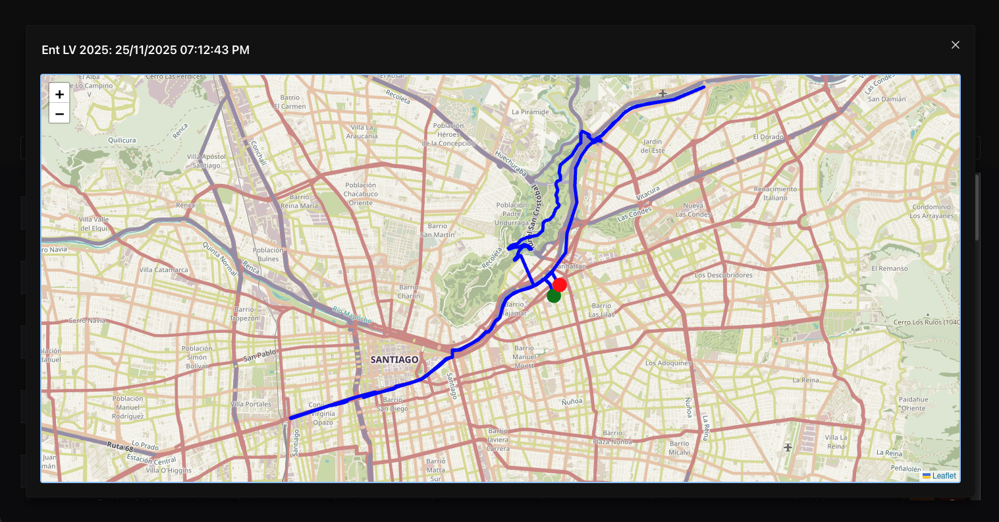

Aplicación para visualizar datos desde archivos .fit
Esta app es una especie de bitácora (como Strava, pero mucho más simple) que permite ir registrando tus rutas en bicicleta (u otra actividad) a partir de un archivo .fit. Personalmente yo uso este GPS barato para ir guardando las rutas, el cual posee una app propia para ir subiendo las rutas a tus dispositivos, pero funciona pésimo (por eso hice la web app).
Por el momento no he comprobado si funciona con archivos .fit generados por otros dispositivos, y tampoco he añadido la posibilidad de visualizar otras métricas como el ritmo cardiáco o la cadencia, dado que desarrollé la aplicación para mi caso particular (no uso ninguno de esos sensores ya que ando en bici de forma más recreativa).
Para almacenar los datos utilicé IndexedDB, asi que los datos sólo se quedan en el navegador y nada se comparte a otros sitios.
Screenshots

